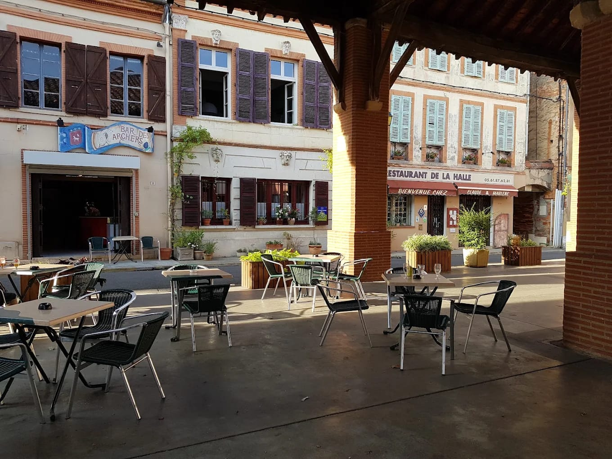

Ce qu'on boit
La carte
Bières pression
Les pressions du moment, au demi ou à la pinte.
Bières bouteille
Une sélection qui tourne, blondes, blanches et ambrées.
Vins de la région
Au verre ou à la bouteille, selon les arrivages.
Apéritifs
Les grands classiques, et des versions sans alcool.
Cafés
Expresso, allongé, noisette. Servis dès l'ouverture le dimanche.
Softs
Sirops, limonades, sodas et jus de fruits.
Restauration sur place. La carte tourne au fil des saisons — les prix sont sur l'ardoise, au bar.
L'essentiel
Horaires & adresse
Nos horaires
| Lundi | Fermé |
|---|---|
| Mardi | Fermé |
| Mercredi | 14h – 21h |
| Jeudi | 14h – 21h |
| Vendredi | 16h – minuit |
| Samedi | 16h – minuit |
| Dimanche | 9h – 14h |
Horaires d'été, indicatifs. Le programme de la semaine est publié sur Instagram.
Venir au bar
8 place de la Halle31310 Rieux-Volvestre Lancer l'itinéraire
Au centre exact du village, sous la halle et ses piliers de brique. On stationne sur la place. Rieux-Volvestre est une étape de la Via Garona, entre Toulouse et Saint-Bertrand-de-Comminges.
Le décor
En images
Concerts & rendez-vous
Le bar programme des soirées musique et suit la vie du village. Le programme complet vit sur Instagram, où paraissent l'affiche du mois et le programme de la semaine.
Voir les datesProchaines dates
- Vendredi 21 août Beer Pong Night
- Samedi 22 août Café Color — soul / funk
Le programme complet est sur Instagram.